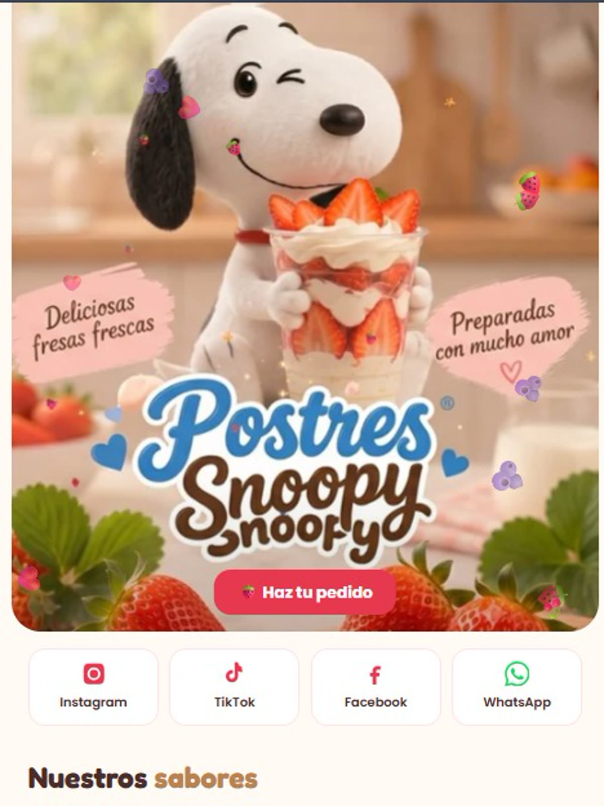

Postres Snoopy — repostería y postres a domicilio
Gastronomía · Postres a domicilio · Landing de negocio
6 postres en el catálogo
Carrito que conserva lo elegido
Pedido que llega escrito
La página arranca con un hero ilustrado sobre la marca, sigue con el catálogo de los seis postres y termina en el carrito: el cliente elige cantidades, deja sus datos de entrega y envía todo por WhatsApp en un solo toque.
Ver proyecto en vivo